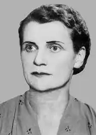

Ольга Мак (у дівоцтві Ольга Нилівна Петрова) народилася 20 липня 1913 року в Кам'янці-Подільському в небагатій родині державного урядовця Нила Семеновича Петрова. Але згодом сім'я переїхала в Київ, де мешкала до 1920-го. Коли дівчинці виповнилося сім років, перебралися до невеличкого села Вільхівчик на Черкащині. Там, біля розкішних та величних пейзажів річки Рось, майбутня письменниця вперше відчула себе українкою. Водночас їхнє життя в селі не можна було назвали легким – батько та двоє сестер померли, а бідність і голод змусили дівчинку з мамою та братом повернутися до Кам'янця-Подільського.
Ольга закінчила семилітню школу. Вона була старанною та наполегливою до навчання. Тоді, щоби вступити до вишу, треба було мати документ про досвід роботи. Тому після школи їй довелося вчителювати в селі та на власні очі побачити колективізацію. Спогади про ці події Ольга Мак пізніше описала у творах "Українське село під більшовиками", "Земля плаче", "Проциха" тощо. У селі Ольга зустріла мовознавця-патріота Вадима Дорошенка, за якого згодом вийшла заміж. Молода родина 1932-1934 роки жила в Харкові, де Ольга навчалася в Інституті іноземних мов. Це був час Голодомору. Пізніше Ольга Мак описала ці жахіття у творах "Столиця голодного жаху", "У Великодню ніч" та повісті "Каміння під косою" (1973).
1934 вони переїхали до Кривого Рога, а 1936 – до Ніжина, де чоловік отримав посаду доцента в педагогічному інституті. Ольга ж у 1938 року закінчила літературно-лінгвістичний факультет Ніжинського педагогічного інституту. У подружжя з'явилося двійко донечок: спочатку Вікторія, потім Мирослава. Жити разом та тішитися, на жаль, не вийшло: карні органи НКВС заарештували чоловіка, оголосивши "ворогом народу", а вона залишилася без житла й роботи. Поневіряння того часу вона згодом змалювала в книжці "З часів єжовщини" (1949-1954). Ольга наполегливо боролася за волю для свого чоловіка, оббиваючи пороги владних кабінетів. Але врешті Вадим утримувався у совєтських концтаборах, поки не помер там 31 грудня 1944-го року. Ольга з доньками тинялася, шукаючи притулку. Під час Другої світової війни перебували в Західній Україні під німецькою окупацією. Тоді вперше тексти Ольги були надруковані в україномовній пресі. Згодом дібралися до Австрії, де в таборі для переміщених осіб перечекали залишок військового лихоліття. У 1947 році Ольга одружилася з галичанином Миколою Гецем, від котрого народила сина Миколу, і мігрувала з новим чоловіком та трьома дітьми до далекої Бразилії, де вони прожили 23 роки, перший час у Ріо-де-Жанейро, потім у Куритибі. На чужині Ольга Мак повністю поринула у літературну творчість. Псевдонім "Мак" Ольга взяла, бо любила ці квіти, які їй нагадували про Україну. Крім того, ранні її тексти опубліковані під ім'ям Олена Гец чи ініціалами О. Г. 1956-го року у Канаді вийшов друком її роман "Чудасій", за котрий авторка отримала нагороду від Українського літературного фонду у Чикаго. Згодом цей твір було запропоновано комісії Нобелівської премії з літератури. Але тоді (у 1958 році) премію присудили Борисові Пастернаку за роман "Доктор Живаго". Письменниця опанувала португальську мову, вивчила історію Бразилії, звичаї та традиції її мешканців. Але і свої твори про Бразилію писала українською мовою. На тему бразильського життя написала трьохтомний пригодницький роман для юнацтва "Бог вогню" (1956), згодом – двотомний роман за назвою "Жаїра" про бразильських індіанців і їхню боротьбу за свої права (1957-1958). За два роки вийшов її роман "Проти переконань" (1960), у якому авторка осмислює проблеми релігійності. У 1961 році – повість "Куди йшла стежка", присвячена темі української революції 1917 року та боротьбі за становлення державності. У 1973 році вийшла повість "Каміння під косою", а також – повість "Руслом угору". За оповідання "Дала дівчина хустину", "У великодню ніч", "Столиця голодного жаху" авторка одержала нагороди від Світової федерації українських жіночих організацій. У творчому доробку письменниці є також книжечки для малечі: оповідки з історії України у казковій формі: "Призабуті казки" (1977) "Як Олег Царгород здобув" (1989), "Киянка Красуня Подолянка" (1998) та інші. Крім книжкових видань її романів, повістей, збірок тощо, її тексти друкувалися також у діаспорній україномовній пресі (під псевдонімами та скороченнями): газетах, альманахах та журналах, зокрема "Свобода", "Шлях перемоги", "Наше життя", "Мітла", "Гомін України"… 1960-го року Ольга розвелася із другим чоловіком, а 1970-го переїхала з Бразилії до Канади, в котрій на той час уже жили її доньки, і оселилася в місті Торонто, де й мешкала до кінця життя. А 1993-го письменниця вперше після еміграції приїхала до вже незалежної України, де не була пів століття. Вона відвідала Київ, Ніжин, Вільхівчик, Канів, Чернівці й інші міста. Зустрічалася зі школярами та студентами, письменниками й науковцями, брала участь у лекціях та науковій конференції, присвяченій річниці Голодомору 1932-1933 років. Письменниця завжди наголошувала, що українська мова повинна бути гордою та не підпадати під вплив зросійщення. Про це вона зокрема написала працю "Катедра українських студій, чи кафедра малоросіянства?". Ольга Мак більшу частину свого життя прожила на чужині, проте ментально завжди була із батьківщиною: творила для України, не боялася правдиво й відверто подавати історичні факти, осмислювати минувшину та висвітлювати важливі суспільно-моральні теми. Померла Ольга Мак 18 січня 1998 року у Торонто. Поховали її на українському цвинтарі "Київ", що міститься в Овквілі біля Торонто, де зокрема поховані і ветерани УПА, де поруч із її могилою могила Уласа Самчука і могили інших достойних людей. Ольга Мак добре відома читачам українських діаспор Північної та Південної Америк та інших континентів. Але в самій Україні творчий спадок цієї величної української письменниці маловідомий, його ще треба поширювати, вивчати та осмислювати.